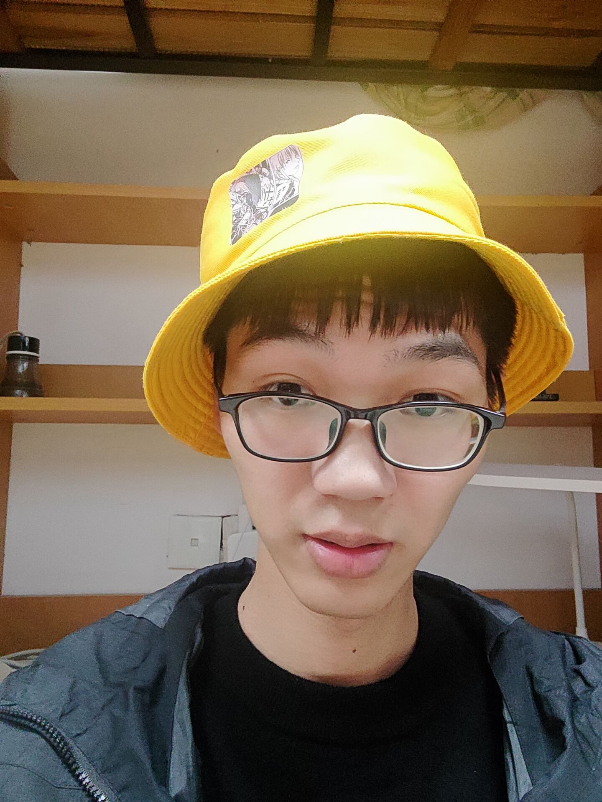
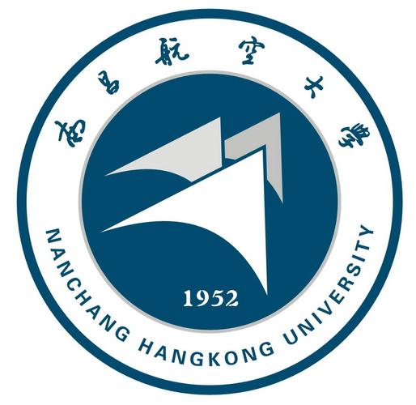

董晓辉 (Xiaohui Dong)
|  |
|
About me
At present, I will go to Hangzhou to work.
Wish me good luck!
Educational experience
|  |
Undergraduate, Nanchang Hangkong University (2017.9 ~ 2021.6)
|

|
Master's degree, Chang Zhou University (2021.9 ~ 2024.6)
|
Papers
-
Yi Liu, Xiaohui Dong, Dingwen Zhang, Shoukun Xu, Deep unsupervised part-whole relational visual saliency, Neurocomputing, 2024, 563: 126916.（SCI，中科院二区，Top期刊）
-
Yi Liu, Chengxin Li, Xiaohui Dong, Lu Ruitao, Dingwen Zhang, Shoukun Xu, Jungong Han, Seamless Detection: Unifying Salient Object Detection and Camouflaged Object Detection, (under submitted)